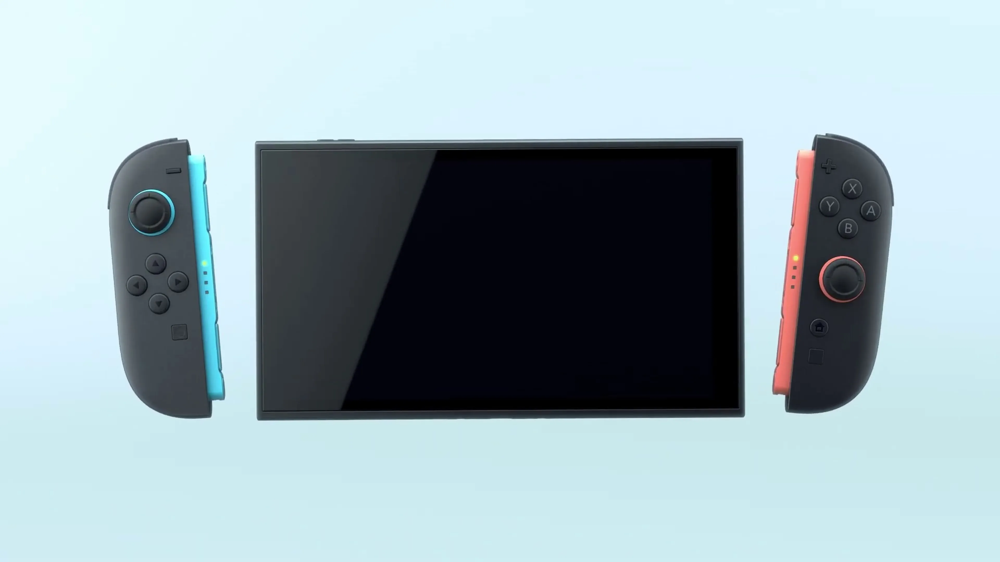
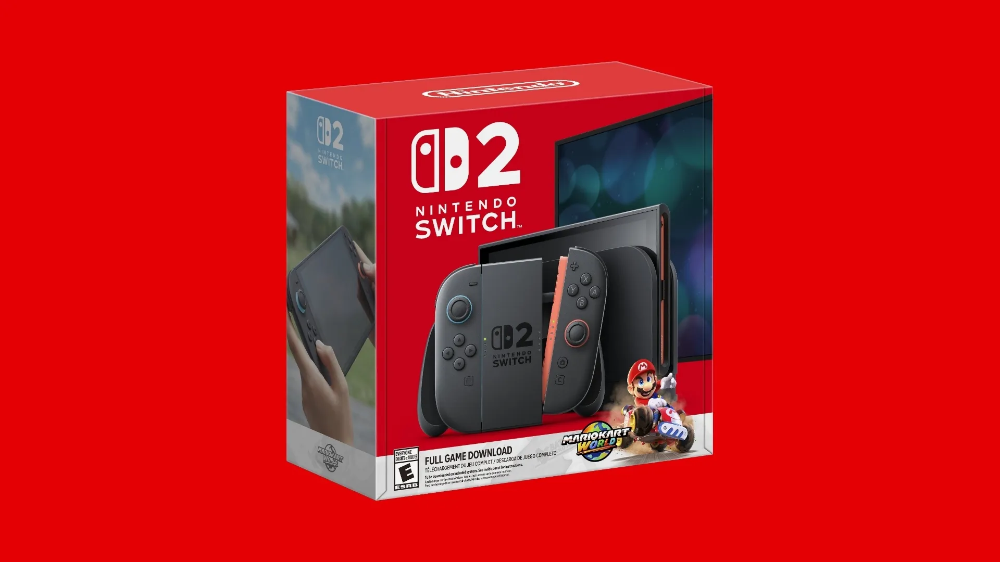
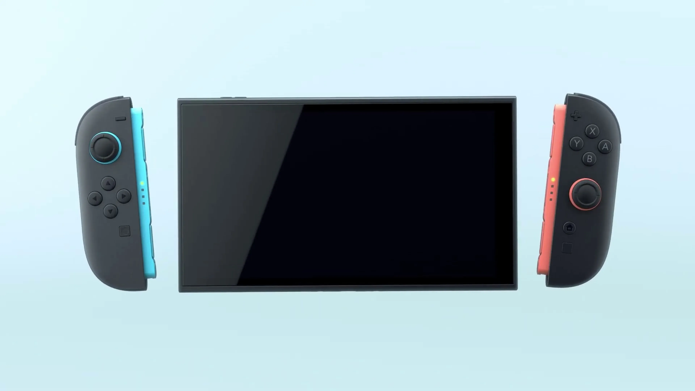
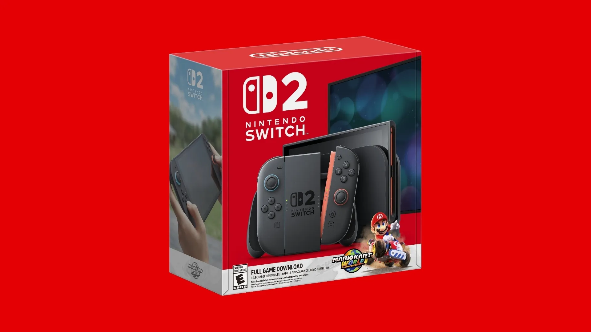

Imágenes de la Nintendo Switch 2
 



La Nintendo Switch 2 combina la portabilidad de una consola de mano con la potencia de una consola de sobremesa.
Características Clave e Innovaciones
- Pantalla: La Switch 2 incorpora una pantalla LCD de 8 pulgadas, más grande que sus predecesoras, ideal para juegos en modo portátil con mayor visibilidad y colores más vivos.
- Procesador: Cuenta con un chip personalizado de Nvidia de última generación, que mejora significativamente los gráficos, los tiempos de carga y la eficiencia energética.
- Joy-Con mejorados: Los nuevos controles Joy-Con ofrecen mayor precisión y ergonomía. Además, integran funcionalidad de puntero de ratón, permitiendo su uso en navegación de interfaz, aplicaciones y ciertos juegos compatibles.
- Retrocompatibilidad: La consola es retrocompatible con la mayoría de los títulos de Nintendo Switch, permitiendo a los jugadores continuar con su biblioteca existente.
- Conectividad: Soporte para conexión Bluetooth mejorada, Wi-Fi 6 y puerto USB-C para una carga más rápida y transferencia de datos eficiente.
Catálogo de Juegos
Juegos Exclusivos de Lanzamiento
- Mario Kart World – Una nueva entrega de la saga con modos multijugador en línea expandidos y pistas dinámicas.
- Donkey Kong Bananza – Un nuevo juego de plataformas con gráficos 3D renovados y mecánicas cooperativas.
- Deltarune - La versión completa del aclamado RPG de Toby Fox, optimizada para el nuevo hardware.
Juegos Mejorados con la Etiqueta "Nintendo Switch 2 Edition"
Varios títulos populares de la generación anterior han sido actualizados para la Switch 2 bajo la etiqueta Nintendo Switch 2 Edition, incluyendo mejoras visuales, rendimiento optimizado y contenido adicional:
- The Legend of Zelda: Breath of the Wild
- The Legend of Zelda: Tears of the Kingdom
- Kirby and the Forgotten Land
- Mario Party Jamboree
- Pokémon Legends: Z-A
- Metroid Prime 4: Beyond
Estos juegos han sido optimizados con texturas en mayor resolución, soporte para mayor tasa de cuadros por segundo y mejoras en la inteligencia artificial.
Para más detalles oficiales, visita la página de Nintendo Switch o consulta la sección de noticias de Nintendo con los últimos anuncios.
Comparación de Modelos Switch
| Modelo | Pantalla | Duración de Batería | Modo Dock | Año de Lanzamiento |
|---|---|---|---|---|
| Switch | 6.2" LCD | 4.5 - 9 hrs | Sí | 2017 |
| Switch Lite | 5.5" LCD | 3 - 7 hrs | No | 2019 |
| Switch OLED | 7" OLED | 4.5 - 9 hrs | Sí | 2021 |
| Switch 2 | 8" LCD | 5 - 10 hrs | Sí | 2025 |
Deja tu Comentario